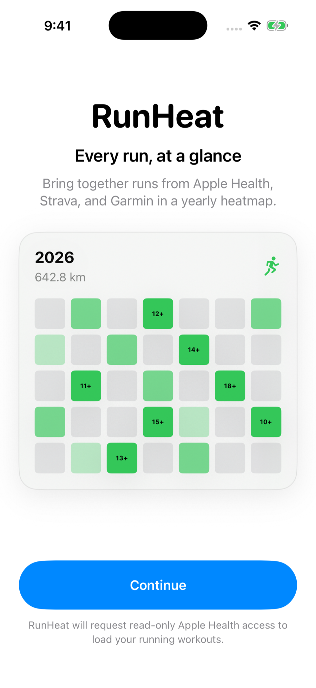
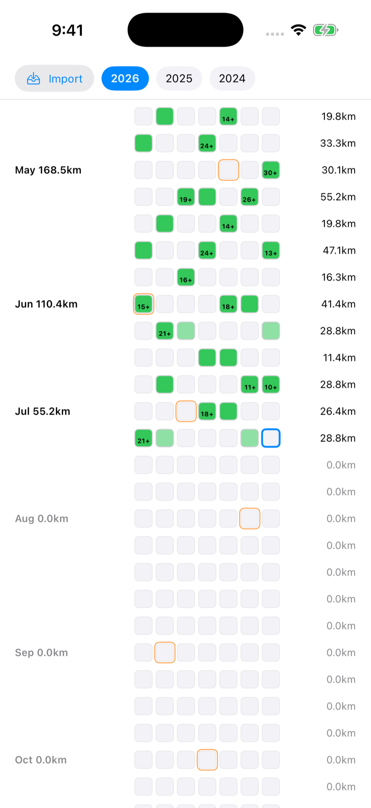
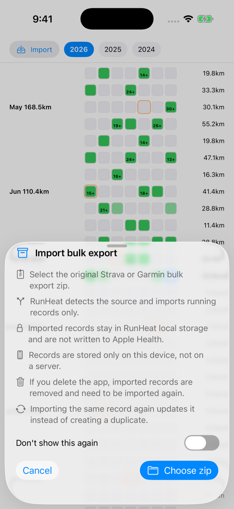
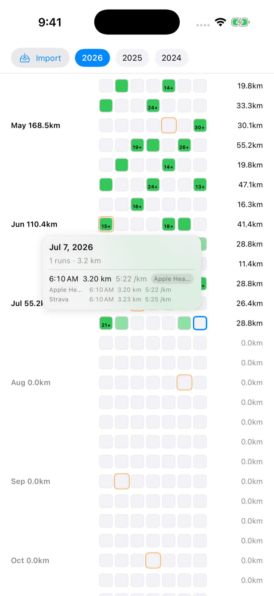
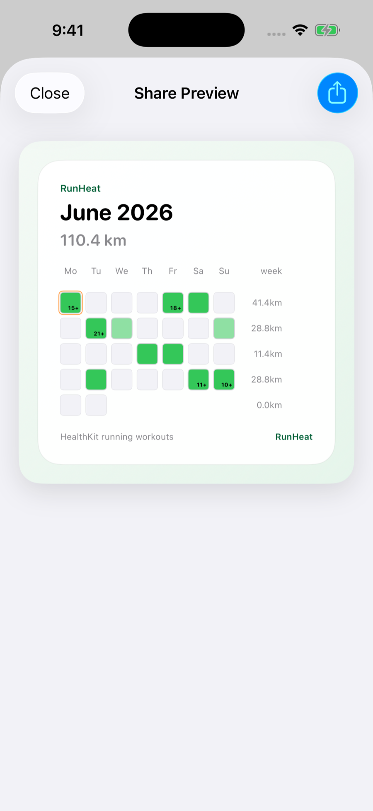

Yearly heatmap
Review a full year of running at a glance, with daily distance represented by color intensity.
Apple Health, Strava, and Garmin in one heatmap
Bring together runs from Apple Health, Strava, and Garmin, explore your yearly heatmap and daily sessions, and share clean snapshots of your running history. RunHeat is available for iOS only.

What it does
Review a full year of running at a glance, with daily distance represented by color intensity.
Tap a date to check session-level distance, pace, start time, and data source without leaving the heatmap.
Create clean yearly, monthly, and weekly heatmap cards for sharing your running progress.
Import running records from supported Bulk Export zip files. Overlapping runs are merged to avoid duplicate totals.
Inside RunHeat




Privacy
RunHeat requests read-only access to workout records from Apple Health and uses running workouts only. Imported Strava and Garmin records stay in local storage on your device, are not written to Apple Health, and are not sent to an external server.
Health data permissions are managed by iOS, and you can change access at any time in the Health app or Settings.